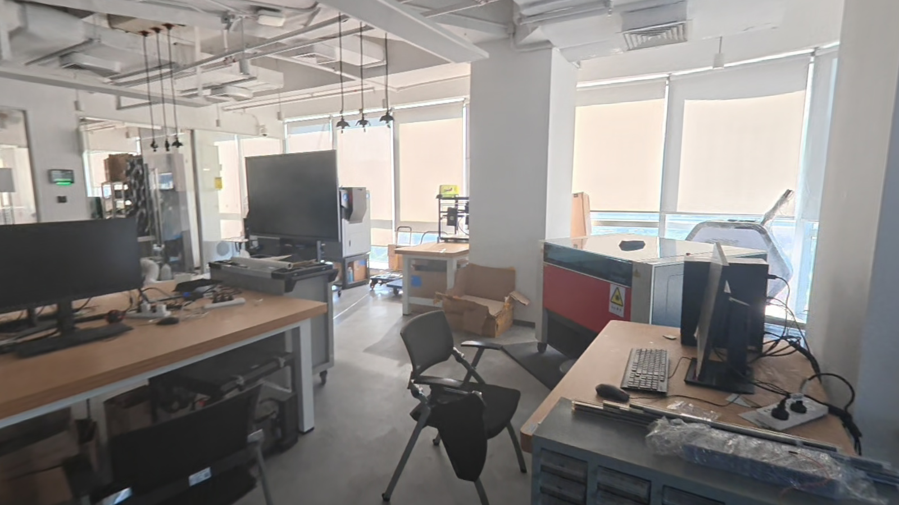

SimulationContact forces
TEZOI 具身仿真演示

Playground
从 Ego 到验证
Ego · 真实第一视角示范
Agent · 从示范构建仿真
任务字幕与观测
精细分割与对比
视频加载失败，请重试。
相对深度
视频加载失败，请重试。
去手与遮挡
视频加载失败，请重试。
三维场景与资产
视频加载失败，请重试。
原始示范视频
任务字幕与观测
处理过程与对照
M12 螺母旋拧
顶点力峰值0 N
0 N
Robotics · 真机验证
真机验证示例待补充
Features
Physical Interaction
连锁接触与动量传递
一次倾倒触发连续碰撞，观察刚体间的动量传递。
Rigid contact / IPC弹性形变与卸载恢复
接触载荷下的压缩与展开，以及卸载后的弹性恢复。
Elastic deformation / IPC线束弯曲与接触
线束在重力与碰撞作用下弯曲下垂，与支撑结构形成接触。
Deformable contact / IPC液体流动与流固接触
液体绕障流动，与容器和固体表面形成耦合响应。
Fluid–solid coupling凝胶形变与接触力
凝胶表面的压入形变，与对应的接触力分布同步变化。
Gel deformation / Contact force水瓶挤压
海绵吸水与挤水
双臂毛毯对折
Visual Rendering


Scene Reconstruction


实拍 / Real重建 / 3DGS POINT CLOUD → 3DGS → TOUR / 02
INTERACTIVE / 03